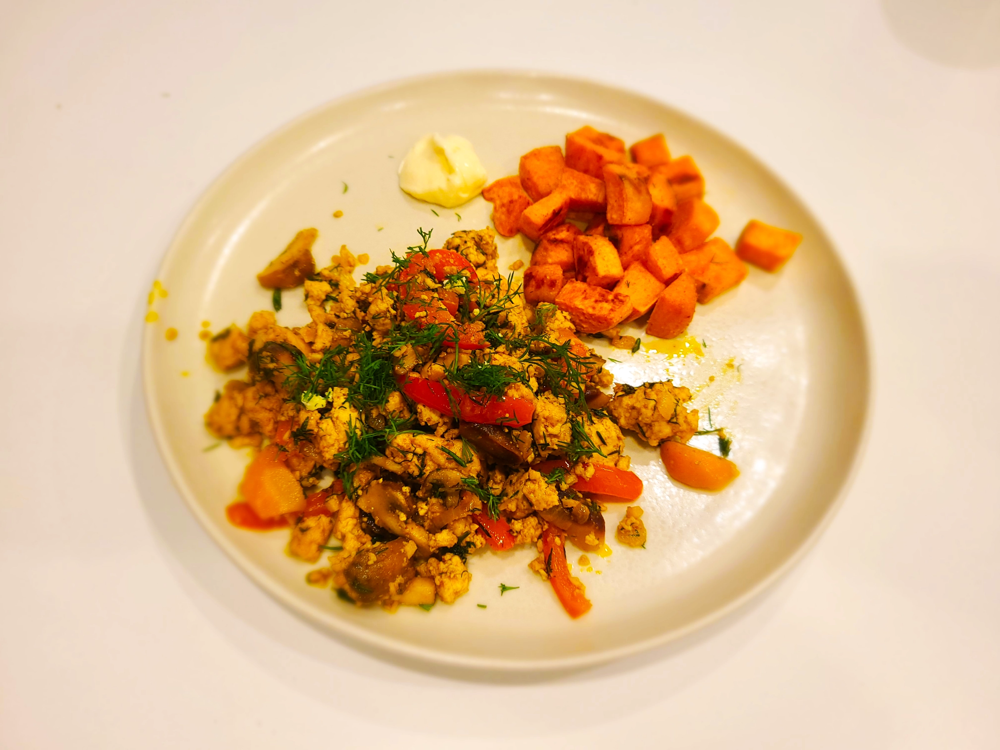

This is our dinner version of a tofu scramble: a delicious, repeatable, use-whatever-you-have-in-your-fridge sort of recipe. Mandeep says it came from an online recipe a long time back. I say it came from our heads, but she’s probably right. If we find the link we’ll post it 😁
🥱 TL;DR
(read on for the long version)
- Chop an onion, garlic, and whatever other vegetables you want to throw in. Chop up some fresh herbs.
- Heat up a large skillet, add olive oil and start adding the vegetables to cook one by one in order of required cooking time.
- About 6 minutes in, add garlic, herbs, and spices.
- Crumble in a block of tofu and keep cooking and mixing.
- Add the softest/leafiest vegetables last, along with more fresh herbs.
- Take off heat, plate it with more herbs sprinkled over the top. Serve with vegan mayo, a starch, and salad.
Full recipe
Cooking time
- Prep time: 20 min
- Cook time: 20 min
Ingredients
| Amount | Ingredients |
|---|---|
| 1 block | tofu (extra firm) |
| ~2 tbsp +++ | olive oil (add more as needed) |
| 1 medium | onion |
| 1 medium | bell pepper* |
| 3 cloves | garlic |
| 1 small head | broccoli (or 1/2 a large head)* |
| 300g / 2 cups | mushrooms (1 package or however many you want)* |
| lots | fresh thyme, dill, or other fresh herbs on hand* can use dried herbs if needed, but fresh really makes the dish |
| ~1 tbsp | turmeric |
| ~1 tbsp | cumin (ground) |
| ~2 tsp | coriander (ground) |
| ~1/4 tsp | cayenne (optional, or to taste) |
| ~1/2 tsp | salt |
| ~1/4 cup | nutritional yeast |
| 1 | lime |
| a few sprigs | fresh parsley |
*A note about the vegetables and herbs: You can really put whatever vegetables you want in this, or whatever you have on hand: asparagus, carrots, cauliflower, potatoes, green beans, zucchini, cabbage, hearty leafy greens like swiss chard or bok choy, kale too, other root vegetables, you name it. Go nuts, it’s your scramble. The important thing to pay attention to is the required cooking time for each. Things like potatoes and root vegetables need to go in early, and save any leafy things for the end.
Same with the herbs: fresh herbs really make the dish and you can use a variety. But use some caution, and think about how they will go with the other spices you put in - e.g., rosemary, sage, and cumin/coriander isn’t necessarily a great combo. So, as always, experiment and use your taste buds to guide you to lovely combinations. For dried herbs, herbs de provence go a long way.
Steps
💡To be neat and orderly, chop all your vegetables first, then you will add them to your skillet one by one, based on the time they each need to cook. Functionally speaking though, chop the first ones to get them cooking, then you can be chopping the next as they cook, throw them in, move on to the next, etc.
Chop the onion and peppers into thin strips. Finely mince the garlic. Chop up the broccoli into smallish florets (if you want you can peel and chop the stems too), chop the mushrooms to similar dimensions as the broccoli (chunks are better than sliced in this recipe), and similarly chop up any other veggies you are going to use.
Get out your biggest skillet and heat it to medium. Add a liberal glug of olive oil.
Add the onions and cook for a couple minutes until the all break apart and just barely start to soften. Then add the bell peppers. If you have other veggies that require longer cooking times (carrots, potatoes, broccoli stems, etc.) add them here too. Cook until things start to soften a bit, maybe 5 min. more. Add the garlic, spices, salt, and half of the fresh herbs. If using dried herbs, add them here too. Stir it all together, adding more olive oil if everything is getting dry. Everything should start to smell nice and fragrant now.
Check your heat, things should be sizzling nicely but not burning or sticking to the bottom. Adjust as necessary.
Add the broccoli next and any other medium-cook-time veggies. Mix it in well.
Then break the tofu apart with your hands and crumble it in. Pieces can vary in size, but go for a median size of 3/4” cubes. Mix together well with everything.
Add in the mushrooms and combine well. Cook for a few minutes more until they start breaking down, then add your leafy vegetables (if using), most of the rest of the herbs (reserving a little for a fresh garnish), and the nutritional yeast. Combine well and continue stirring.
Taste and adjust salt and spices as needed. If everything is too dry add some more olive oil (or if really health conscious, add a little water). Check for the doneness of the different vegetables - they should be cooked but still have a little crunch to them. Total cooking time should be somewhere around 20 minutes.
When everything is done to your liking take it off the heat. Optional: squeeze the juice if 1/2 lime in and mix to give it a nice brightness.
To serve
Plate it, topping with remaining fresh herbs and/or chopped fresh parsley, and a wedge of lemon.
A dollop of vegenaise (or regular mayo) and some hot sauce is a great accompaniment.
Our go-to service is this scramble with a side of baked sweet potato1 and crunchy kale salad.
Footnotes
-
Fast sweet potato recipe: cube a large sweet potato; toss with olive oil, salt, and pepper; bake on parchment paper-covered baking sheet at 175°C / 375°F for about 20 min, turning once. Take out, place in large bowl and toss with a little more salt. Boom. Delish. 💥 ↩